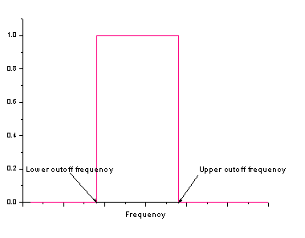
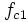
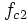
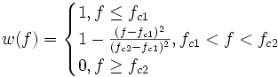
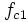
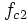
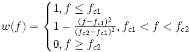

/Algorithm_FFT_Filters2.gif)
- 
/Algorithm_FFT_Filters4.gif)
/Algorithm_FFT_Filters5.gif)
Angenommen,  ist die Passfrequenz und  die Stopfrequenz. Die Fensterfunktion kann ausgedrückt werden durch:

Die Fourier-Transformation des Eingabesignals wird zuerst berechnet. Dann werden die transformierten Daten im Frequenzbereich verarbeitet. Zum Schluss werden die geänderten Frequenzen wieder zurück in das Signal des Zeitbereichs mit der inversen Fourier-Transformation konvertiert.
Unterschiedliche Filtertypen verwenden eine unterschiedliche Verarbeitung der transformierten Daten, was zu unterschiedlichen Filterungseffekten führt.
Für Tiefpass-, Hochpass, Bandpass- und Bandblockfilter sowie parabolische Tiefpassfilter werden transformierte Daten mit einem Fenster multipliziert, das von dem Filtertyp bestimmt wird, wie unten in der Tabelle zu sehen.
| Tiefpass |
|
|---|---|
| Hochpass |
|
| Bandpass |
|
| Bandblock |
|
| Tiefpass Parabolisch |
Angenommen,  ist die Passfrequenz und  die Stopfrequenz. Die Fensterfunktion kann ausgedrückt werden durch:  |
Beachten Sie, dass die Option DC-Offset behalten das für die Multiplikation der transformierten Daten verwendete Fenster beeinträchtigen. Wenn das Kontrollkästchen aktiviert ist, wird der erste Punkt des Fensters auf 1 gesetzt.
Wenn der Schwellenwertfilter verwendet wird, wird die Potenz jeder Frequenzkomponente untersucht, nachdem die Fourier-Transformation für das Eingabesignal durchgeführt wurde. Wenn die Potenz einer Komponente größer ist als der Schwellenwert, wird diese Komponente ausgeschnitten. Ansonsten wird sie beibehalten. Nach der Untersuchung aller Frequenzkomponenten wird eine inverse Fourier-Transformation für die geänderten Frequenzen durchgeführt.